Spring Boot, MySQL and Azure App Service - What Azure would look like for Java developers
📅 2/7/2019
This is the lab content that I created for a session that I delivered in the Microsoft Ready 2019 in Seattle.
This technical lab is designed for you to experience building Java applications, deploying and running them on Azure. It consists of several exercises which are step by step tutorials that you can follow easily. The lab is focused on developing Java applications with Microsoft tools such as Visual Studio Code, deploying the applications to App Service on Linux, and implementing Continuous Integration/Continuous Delivery (CI/CD) with Azure Pipelines.
Objectives
As a result of working through this lab, you will
- get real experience in developing Java applications with VSCode, Azure DevOps and App Service.
- be better able to articulate the Azure DevOps CI/CD experience for Java applications.
- be better able to understand the basics of Spring Boot framework and MySQL database.
Exercise 0 - Familiar with the lab environment
In this exercise, we will check the environment settings on the lab machine to make sure it is ready for the lab. After completing the exercise, you will know the basic environment settings which are required for the Java development on Windows.
0.1 - Java settings
In this lab, we will use OpenJDK and Maven to develop and build Java applications. Both of these two components have been installed and configured on the lab machine. You can follow the steps below to check the settings to make sure they are working.
-
On the lab machine, click the Command Prompt icon on Windows task bar to launch the Command Prompt.
-
In the Command Prompt window, run command
java --versionfollowed bymvn --version. -
The output in the Command Prompt should look like the following screenshot.
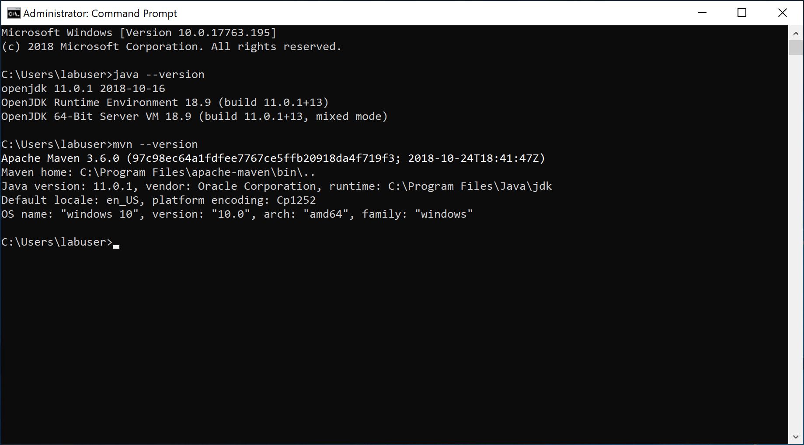
If you can see the similar output as shown in the above screenshot, the Java settings are correct.
0.2 - Local MySQL instance
On the lab machine, MySQL is installed and a local instance is configured. We will use it as the local database engine for testing purpose when we develop Java applications. Please follow the steps below to verify the local instance of MySQL is working.
-
On the lab machine, click the MySQL Workbench icon on Windows task bar to launch it.
-
In the window of MySQL Workbench, click Local instance MySQL80, as shown in the screenshot below, input the password
P@ssw0rd1and click OK button.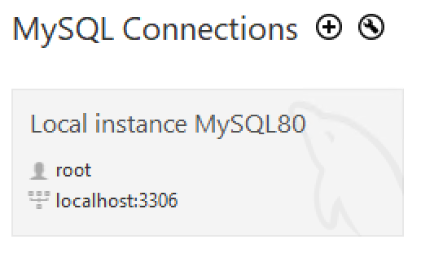
-
If the local MySQL instance is working well, the Workbench should connect to it successfully, and you should see the Server Status as Running when you click the Server Status on the left Navigator.
-
Let's create a new database that we will use in the later exercises. In the Query 1 window, run the following T-SQL to create a new database.
create database tododb; -
Close MySQL Workbench after you finish the exercise.
0.3 - Azure Database for MySQL
In this lab, we will use Azure Database for MySQL as our database engine. There is an Azure Database for MySQL instance in your Azure subscription. We need to prepare the database on it for our code.
-
Open browser and explore https://portal.azure.com, sign in with the Azure account provided.
-
Click Resource groups > [the name of the resource group]. You will see 4 resources which look similar to the following screenshot.
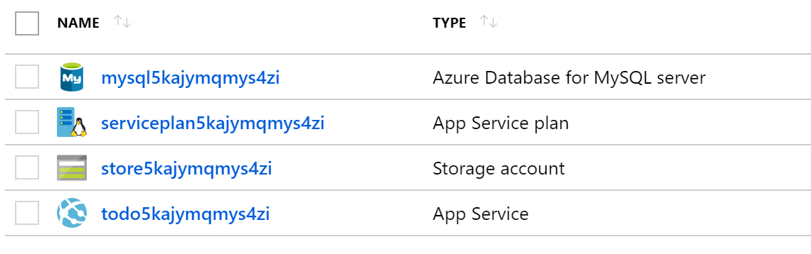
-
Click the name of Azure Database for MySQL server to view its details.
-
Click Cloud Shell button to open the cloud shell. Select Bash as the shell environment.
[!NOTE] You might have to initialize the Cloud Shell and configure the storage account that it needs to use. If prompt, choose Show advanced settings, and then choose to use existing resource group and storage account, and create a new file share. See screenshot below as a reference. 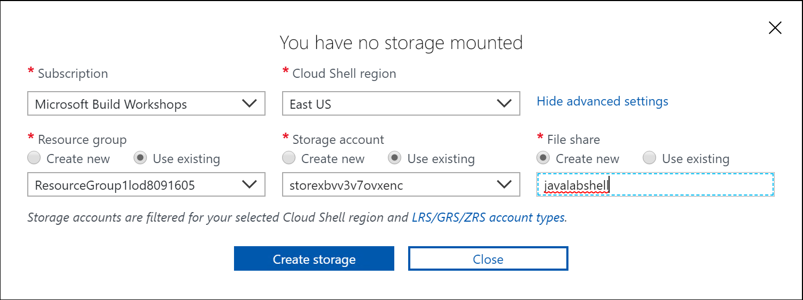
-
In cloud shell window, connect to MySQL server with the following command:
mysql --host [mysql server name].mysql.database.azure.com --user dbadmin@[mysql server name] -pYou can find [mysql server name] from the Overview page of your Azure MySQL instance. See screenshot below as a reference.

-
When prompt, type the password
P@ssw0rd1. -
When you connect to MySQL server successfully, type the following command to view all existing databases.
show databases; -
Type the following SQL script to prepare for the database that we will use in our code later.
CREATE DATABASE tododb; CREATE USER 'springuser'@'%' IDENTIFIED BY 'Spring1234'; GRANT ALL PRIVILEGES ON tododb.* TO 'springuser'@'%'; FLUSH PRIVILEGES; -
After running the above script, if you run
show databases;again, you will see a new database created. -
Type
quit;to close the connection, and then close the cloud shell window. -
Click Connection security of Azure MySQL instance, turn on Allow access to Azure services and click Save. See screenshot below.
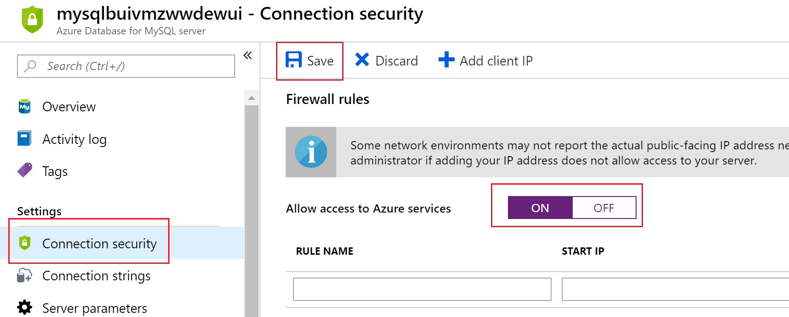
0.4 - Extensions of Visual Studio Code
In this lab, we will use Visual Studio Code as our development environment for Java applications. The Java language support in Visual Studio Code is provided through a set of extensions. You can view these extensions in Visual Studio Code. For more information about using Java in VS Code, please see Java in Visual Studio Code.
- Open VSCode by clicking its icon on Windows task bar.
- Open the extensions panel by clicking its icon or press
Ctrl+Shift+X. You should see all extensions that are required by this lab.
Exercise 1 - Build a Sprint Boot web app in VS Code
In this exercise, we will create a Sprint Boot project with VS Code from scratch. We will also run the code and debug it in VS Code. After completing the exercise, you will better understand the developer experience that VS Code provides to Java developers.
1.1 - Create a Sprint Boot project in VS Code
Please follow the steps below to create a Sprint Boot project in VS Code from scratch.
-
Open VS Code. If there is any folder opened in VS Code, close it by clicking File > Close Folder or pressing
Ctrl+K F. -
In VS Code, open Command Palette by clicking View > Command Palette or pressing
Ctrl+Shift+P. -
In Command Palette, input
Springand then select Spring Initializr: Generate a Maven Project. See screenshot below for a reference.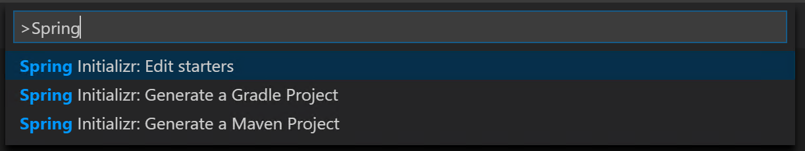
-
Follow the steps of Spring Initializr wizard with the following values.
|Properties |Value | |------------|----------------| |Language |Java | |Group Id |com.azurelabs | |Artifact Id |hellospringboot | |Version |2.1.1 |
-
For dependencies, select DevTools and Web. See screenshot below.
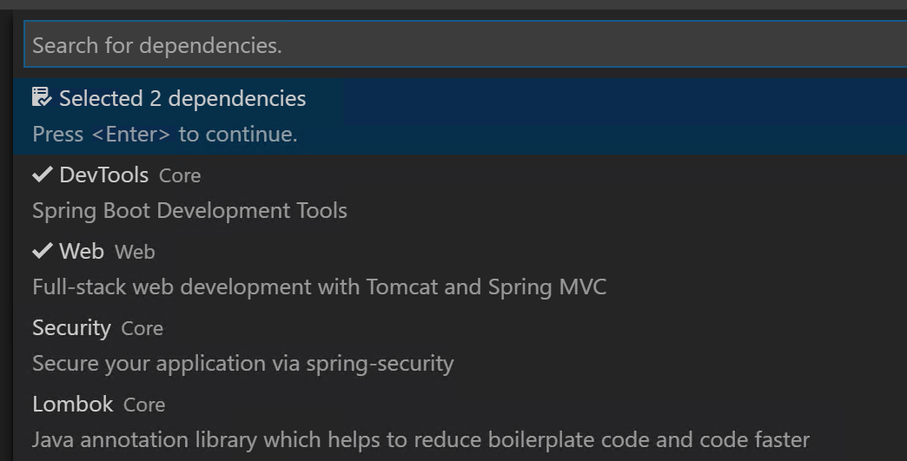
-
In the Select Folder window, select
C:\Codeas the folder and click Generate into this folder button. -
Once the project is generated, click Open button on the popup in VS Code to open the folder in VS Code.
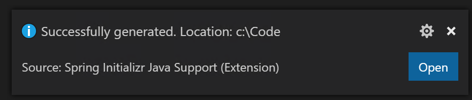
By following the Spring Initializr wizard, a Spring Boot project is created. This is an empty project. It provides us a project structure based on which we can build our applications. The folder structure of the project is the typical structure of Maven projects.
1.2 - Implement a web controller
Let's add a simple web controller to handle the web request.
-
In VS Code, create a new file,
HelloController.java, in the folder src/main/java/com/azurelabs/hellospringboot. -
In this new file, write the following code:
[!NOTE] Type the code to try the Java coding experience in VS Code.
package com.azurelabs.hellospringboot; import org.springframework.web.bind.annotation.RequestMapping; import org.springframework.web.bind.annotation.RestController; @RestController public class HelloController { @RequestMapping("/") public String Index() { return "Hello, Spring Boot!"; } } -
With the above code, we have a simple web controller that can handle the request. To test the application locally, open the Terminal in VS Code by clicking View > Terminal or pressing
Ctrl+`. -
In the Terminal, run command
.\mvnw spring-boot:run. This command will compile the code and run it. -
When the project is running successfully, you will see the output in the Terminal which is similar as Started DemoApplication in 11.869 seconds (JVM running for 13.251).
-
Open a browser and visit
http://localhost:8080. You should see a simple page as shown in the screenshot below.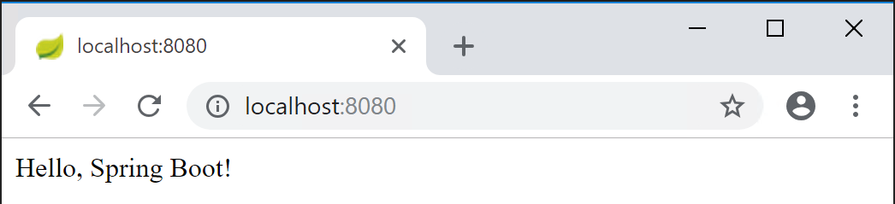
-
Close the browser, and stop the application by pressing
Ctrl+Cin Terminal.
1.3 - Debug the Java code in VS Code
To debug the Java application locally in VS Code, we need to configure the launch.json. Fortunately, VS Code has made it very easy for us to configure it.
-
In VS Code, click Debug icon on the left navigation or press
Ctrl+Shift+Dto open the Debug Panel. -
Click the Configure button to generate a launch.json file. See screenshot below for details. VS Code helps us generate the launch.json automatically based on the project settings.
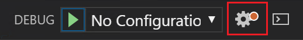
-
Open
HelloController.javaand set a breakpoint on the code,return "Hello, Spring Boot!";. -
Press
F5or click Start Debugging button on the Debug Panel. -
When the application is running, open a browser and visit
http://localhost:8080. The breakpoint should be hit, as shown in the screenshot below. PressF5or click Continue and you will see the page in the browser.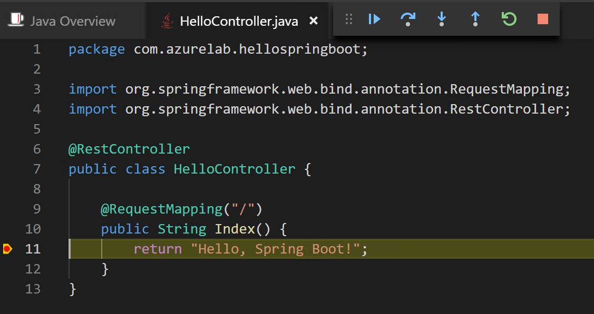
-
Stop the debugging by clicking Stop button or pressing
Shift+F5.
Close VS Code and browser window after you complete the exercise.
Exercise 2 - Run a Spring Boot web app on Azure
In this exercise, let's switch the gear and create a simple web app with Spring Boot and MySQL, and then publish it to an Azure website. For the sake of time, let's get the completed code from the GitHub repository.
2.1 - Clone the GitHub repository and build the project locally
To clone the project, follow the steps below.
-
In the lab machine, launch the Command Prompt. Switch the work directory to C:\Code by typing the command:
cd C:\Code. -
Clone the repository with the command:
git clone https://github.com/chunliu/todowebjava.git. When the clone completes, the output in the Command Prompt looks like the following screenshot, and a new folder, todowebjava, is created in C:\Code.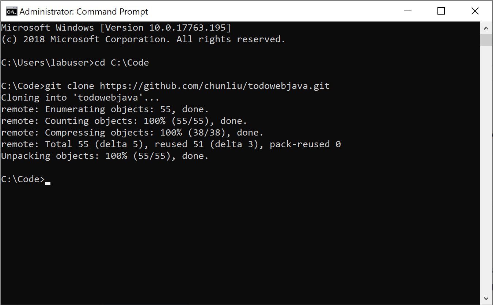
-
In the Command Prompt, type
cd todowebjavato go into the folder, and then typecode .to open the folder in VS Code. -
Explore the project structure and the Java code in the folder src/main/java/com/azurelabs/todowebjava. This project uses Spring Data JPA to read and persist data to MySQL database.
-
Let's configure the database connection in the project before we run it. Open application.properties file in src/main/resources folder.
-
Replace the following values in the application.properties file according to the table below, and save the changes. Don't change other settings in this file.
|Property Name |Old Value |New Value | |---------|---------|---------| |spring.datasource.url |${SPRING_DATASOURCE_URL} |jdbc:mysql://localhost:3306/tododb?serverTimezone=UTC | |spring.datasource.username |${SPRING_DATASOURCE_USERNAME} |root | |spring.datasource.password |${SPRING_DATASOURCE_PASSWORD} |P@ssw0rd1 | |server.port |${PORT} |80 |
-
Now we can test if it works. In VS Code, press
F5to launch the web app. When it is launched successfully, open a browser and explorehttp://localhost. You should see the home page of the todo web app. -
Let's create a new todo item in the web app. In the browser window, click Todo on the left navigation, and then click New Task.
-
In the pop up, input a name for the task, for example,
A new task, and click OK. A new task should be created accordingly. -
To verify if the data has been persisted in the database, you can open the MySQL Workbench, connect to the MySQL instance, and run the following query. You should see 1 record in the database.
use tododb; select * from todo_item;
2.2 - Publish the web app to Azure App Service
Follow the steps below to update the code and publish the web app to the Azure App Service.
-
In VS Code, open application.properties file in src/main/resources folder.
-
Instead of hard-coding the database connection string, we want to configure it via the Application Settings of Azure Web App. So discard the changes you made in section 2.1. The code of application.properties should look like the following which is the same as what you pulled from GitHub first time.
spring.datasource.driver-class-name=com.mysql.cj.jdbc.Driver spring.jpa.hibernate.ddl-auto=update spring.jpa.properties.hibernate.dialect=org.hibernate.dialect.MySQL57InnoDBDialect spring.datasource.url=${SPRING_DATASOURCE_URL} spring.datasource.username=${SPRING_DATASOURCE_USERNAME} spring.datasource.password=${SPRING_DATASOURCE_PASSWORD} server.port=${PORT} -
In the Terminal window, run command,
mvn clean package -DskipTests, to package the code. -
Find the package todowebjava-0.0.1-SNAPSHOT.jar in target folder. Right click and rename it to app.jar.
-
In VS Code, click Azure icon on the left navigation to open App Service explorer, and then click Sign in to Azure.
-
Click Copy & Open in the popup window. See screenshot below. A browser window will be opened.
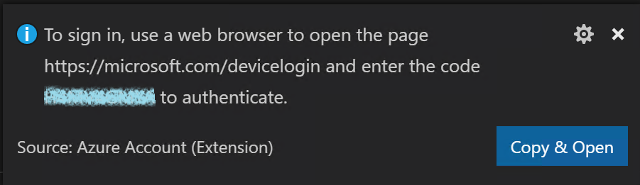
-
In the browser window, right click in the Code input, select Paste to paste the device code, and click Continue button. See screenshot below as a reference.
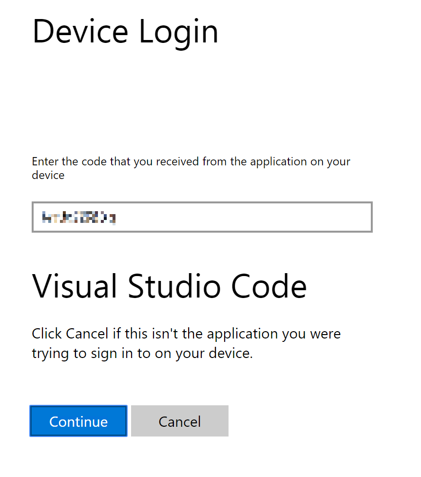
-
Sign in with the Azure account.
-
When you sign in successfully and see the following screen, close the browser window and go back to VS Code.
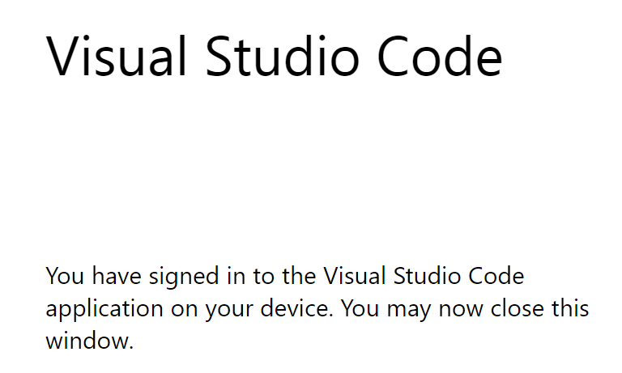
-
In Azure App Service explorer, expand the corresponding subscription and locate the Azure Web App. See screenshot below.
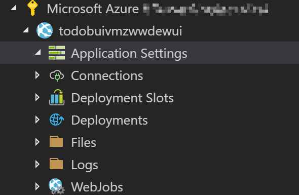
-
Right click Application Settings and click Add New Setting. Follow the instruction to add the following application settings. Alternatively you can also add these settings in Azure Portal.
|Name |Value | |---------------------------|---------| |SPRING_DATASOURCE_URL |jdbc:mysql://[mysql server name].mysql.database.azure.com:3306/tododb?useSSL=true&serverTimezone=UTC | |SPRING_DATASOURCE_USERNAME |springuser@[mysql server name] | |SPRING_DATASOURCE_PASSWORD |Spring1234 | |PORT |80 |
Replace [mysql server name] with your MySQL server name. For details about how to find [mysql server name], please refer to Section 0.3.
-
In VS Code, switch to workspace Explorer by clicking the Explorer button on the left navigation or press
Ctrl+Shift+E. -
Right click on app.jar and click Deploy to Web App.
-
Follow the instruction to choose the Azure subscription, and the existing Web App. In this lab, we don't use Create New Web App option.
-
In the popup dialog box, click Deploy button. The deployment process will be kicked off. You can open the Output window to see its progress.
-
When you see the following popup, the deployment completes successfully. Click Browse Website button to browse the website.
[!NOTE] You may have to restart the website in Azure Portal and wait for several minutes before you can see the home page of the website.
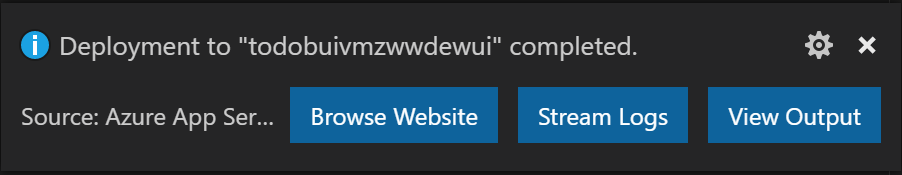
-
To verify if the site works properly, you can create a new task on the Todo page. Furthermore, you can use MySQL Workbench to connect to the MySQL server and query if the task you created is in the database.
Exercise 3 - Implement CI/CD with Azure DevOps
In this exercise, we will implement CI/CD for our Spring Boot project with Azure DevOps pipelines.
3.1 - Create an Azure DevOps organization
Follow the steps below to create an Azure DevOps organization. We will use it to create CI/CD pipelines.
-
Open browser and explore to https://dev.azure.com.
-
Sign in with the provided Azure account.
-
After signing in successfully, click Start free button on the Azure DevOps page, and then follow the wizard to create the organization.
-
When the organization is ready, create an Azure DevOps project by providing a project name, for example, todowebjava, and clicking Create project button. See screenshot below as a reference.
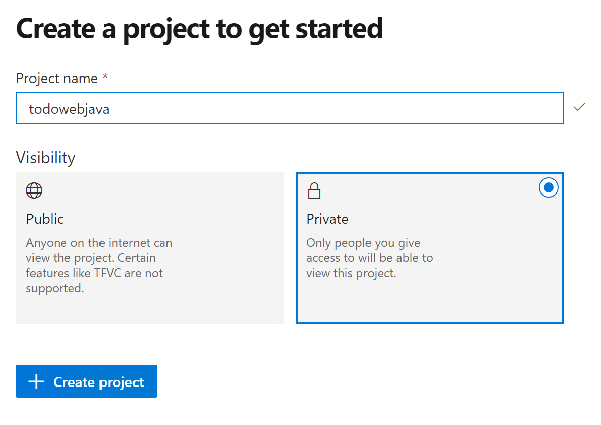
3.2 - Push the code repository to Azure DevOps Repos
Azure Pipelines support multiple source repositories, such as GitHub, Bitbucket etc. In our lab, we will use Azure Repos as the source repository. We need to push our source code from the local machine to Azure Repos.
-
Update the URL of the origin branch of Git to Azure Repos' URL with the following command:
git remote set-url origin [Azure Repos URL]To get the [Azure Repos URL], on the Azure DevOps project page, click Repos > Files. You will see push an existing repository from command line option. Copy the URL from there. See screenshot below as a reference.
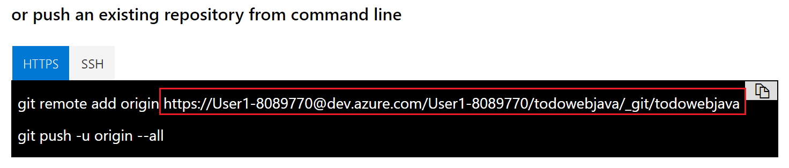
-
Then push the repository to Azure Repos with command:
git push -u origin --all. When prompt, sign in with the Azure account provided with the lab. -
Once the repository is pushed successfully, you will be able to see the code in Azure DevOps. See screenshot below as a reference.
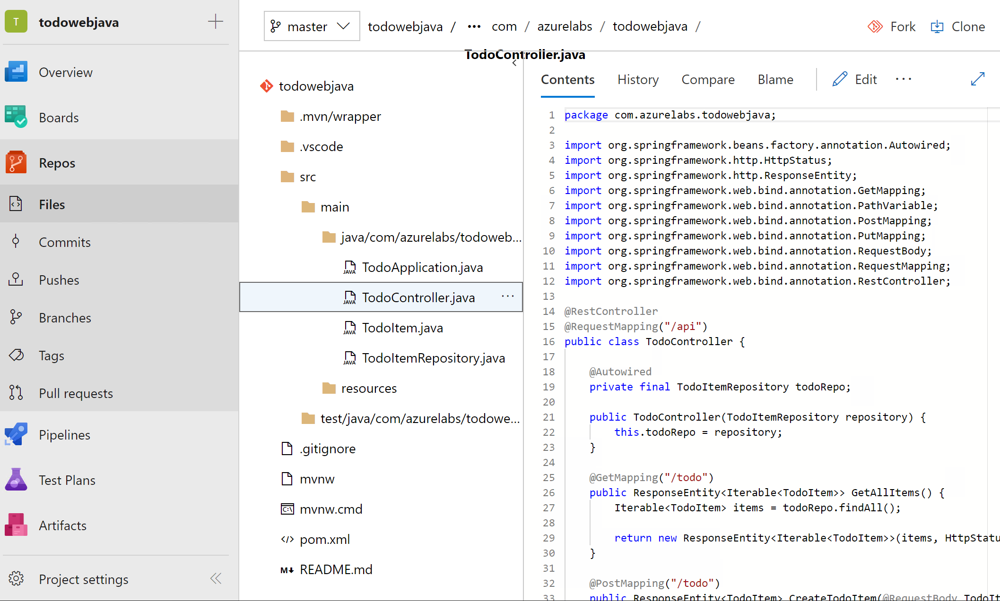
3.3 - Create the build pipeline
When the source code is in Azure Repos, we can create a build pipeline to build the code. Azure Pipelines support two ways to create a build pipeline, YAML pipeline and Visual Designer. For the sake of time, we will use the Visual Designer in this lab. You can try YAML pipeline by yourself later.
-
On Azure DevOps project page, click Pipelines > Builds, and then click New pipeline button.
-
On the New pipeline page, click Use the visual designer link to switch to the visual designer.
-
Select Azure Repos Git as the source, and choose the corresponding project repository, then click Continue.
-
On the Choose a template page, choose Maven as the template. See screenshot below as a reference.
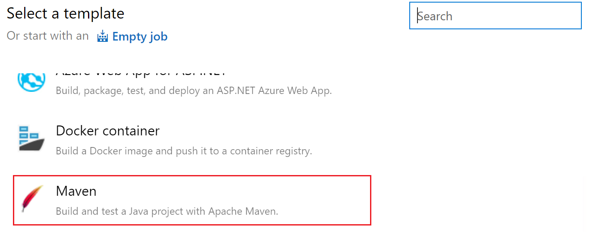
-
When the build pipeline is created based on the Maven template, you don't even need to make any change. Azure Pipelines understand the Maven project and the default configurations are good enough for our lab. Go ahead to click Save & queue to queue a new build.
-
When the build is kicked off, you can monitor the build status. When the build completes successfully, click Summary and Tests tabs to view the results.
3.4 - Create the release
Follow the steps below to create the release pipeline.
-
On Azure DevOps project page, click Pipeline > Releases, and then click New pipeline button.
-
On the New release pipeline page, select Deploy a Java app to Azure App Service template.
-
Click Add an artifact, choose the build pipeline that you create in the previous exercise, choose Latest for Default version, and then click Add. See screenshot below as a reference.
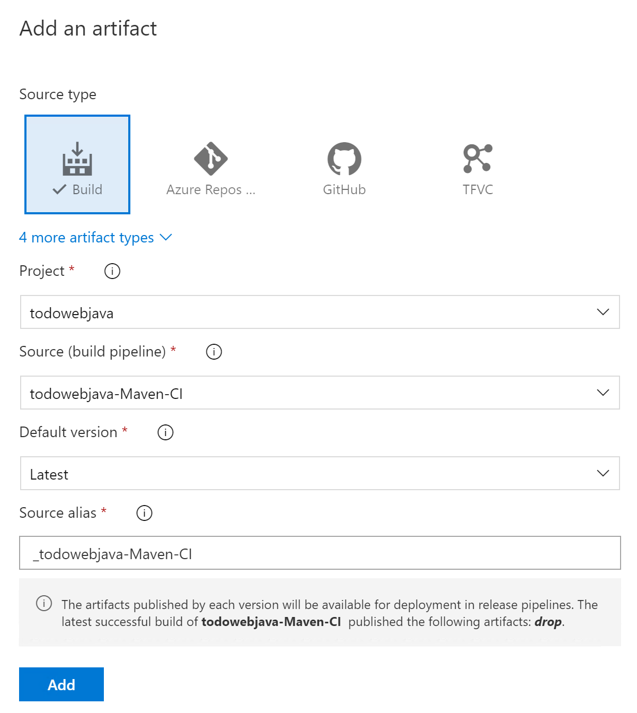
-
Click 1 job, 2 tasks link on Stage 1 box.
-
We need to configure an Azure connection for the deployment. Click the Manage link besides Azure subscription. It will open the Azure connection settings page.
-
On the new page, click New service connection dropdown and click Azure Resource Manager.
-
On the popup window, input a Connection name, such as Java Web App, and choose the corresponding resource group from the dropdown, and then click OK. See screenshot below as a reference.

-
When the Azure connection is created successfully, go back to the New release pipeline page. Now you should be able to see the Azure connection you created in the Azure subscription dropdown list. If not, please click the refresh button besides the dropdown list and try again. Choose the Azure connection from the dropdown list.
-
For App type, choose Web App on Linux. And choose the corresponding Azure web app as App service name. See screenshot below as a reference.
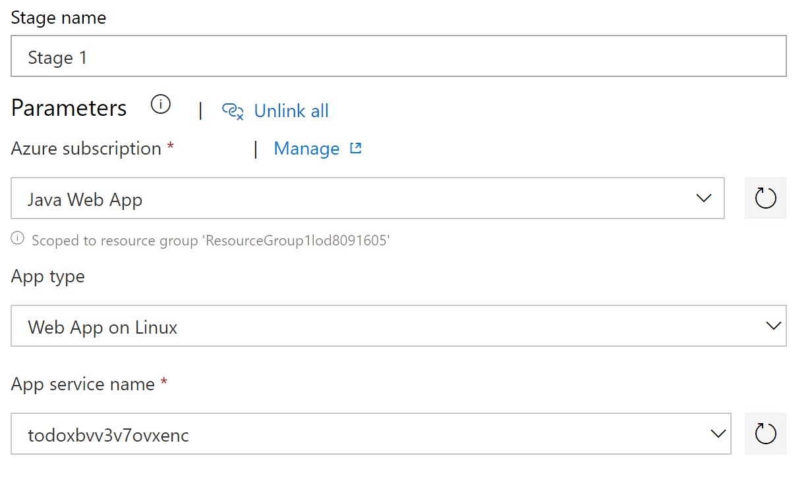
-
As in our code we build a jar file rather than a war file, we will use Deploy Jar to Azure App Service task rather than Deploy War to Azure App Service task. So right click on Deploy War to Azure App Service and disable it, and right click on Deploy Jar to Azure App Service to enable it.
-
The most of the configurations for Deploy Jar to Azure App Service should have been generated. As in our code there is only one jar file, we can choose it specifically. Click the ... button besides Package or folder option and locate the todowebjava-0.0.1-SNAPSHOT.jar file as shown in the screenshot below.
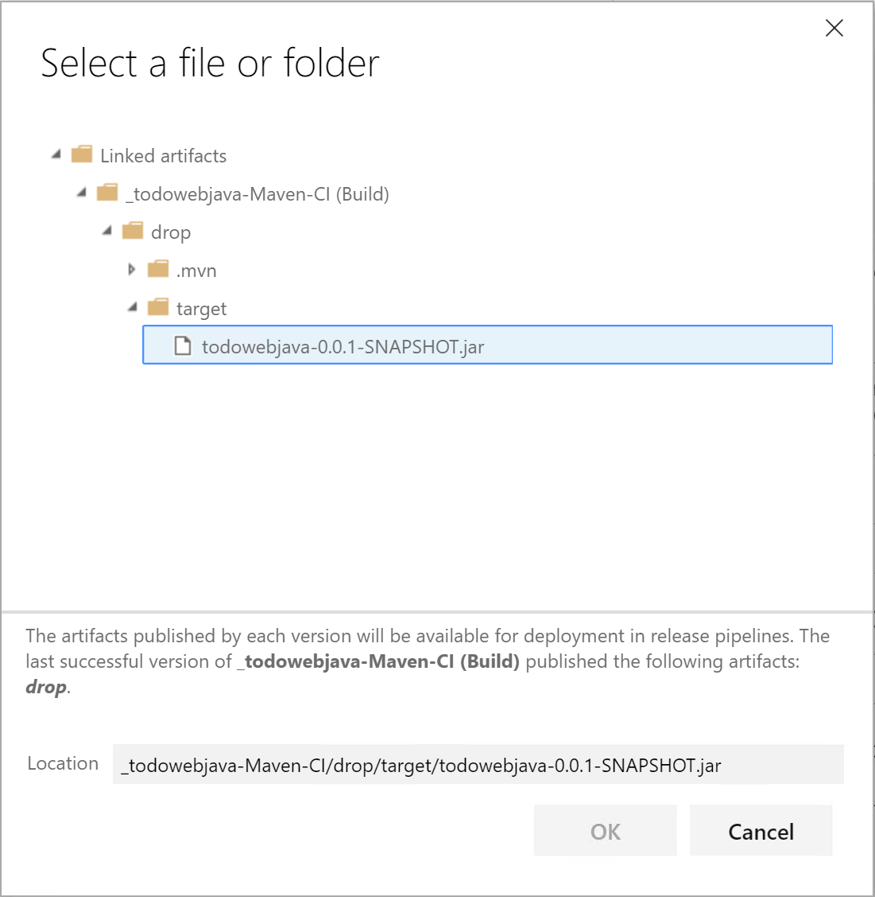
-
With the above settings, we finish the configuration of the release pipeline. Click the Save button, and then Release > Create a release to test the release pipeline.
-
On the Create a new release page, select Stage 1 from the dropdown list and click Create button.
-
Click the new release created and then click Deploy button to kick start the deployment. You can click the stage box to open the console and monitor the progress of the deployment.
-
When the deployment completes successfully, explore the website in the browser.
3.5 - Clean up the Azure DevOps organization
After you complete all exercises, please follow the steps below to clean up the Azure DevOps organization so that the Azure account of the lab can be reused.
- On Azure DevOps project page, click Azure DevOps logo at the upper left corner, and then click Organization settings at the lower left corner.
- Click Overview under Organization Settings > General. Scroll down and then click Delete button under Delete organization.
- Copy and paste the organization name as shown in the popup window and click Delete button.
Conclusion
You have completed all exercises in this lab. In this lab, we have tried to
- develop Java applications based on Spring Boot with Visual Studio Code.
- deploy and run Java applications on Azure App Service on Linux.
- implement CI/CD for Spring Boot project with Azure DevOps.
Hope you've got the hands-on experience and better understanding regarding how Java and Azure could work together.
Additional resources
If you want to learn more about Java on Azure, the following resources could be used as starting points.